Paso 1: Descarga e Intalacion
Lo primero que hay que hacer es descargar la herramienta que vamos a usar en este caso sera "VirtualBox", ademas de los archicvos tipo ISO que contendrá los sistemas operativos.
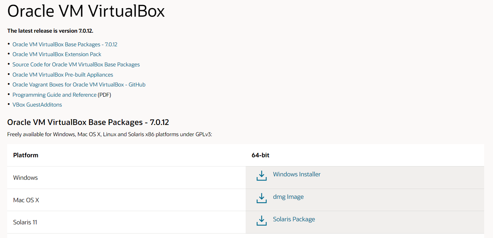 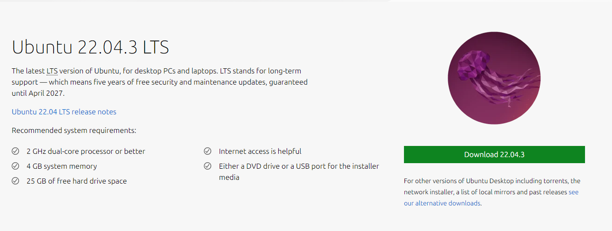 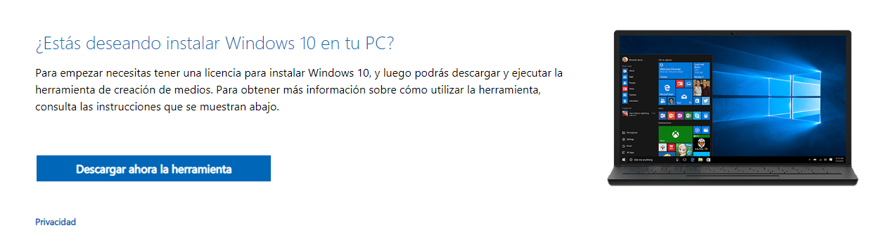Cuando ya se tenga todo descargado, se instalará la herramienta "Oracle Virtual Box Machine", dentro de este programa se podra instalar los sistemas operativos dentro del propio ordenador. Cuando se haya instalado abrimos el programa.
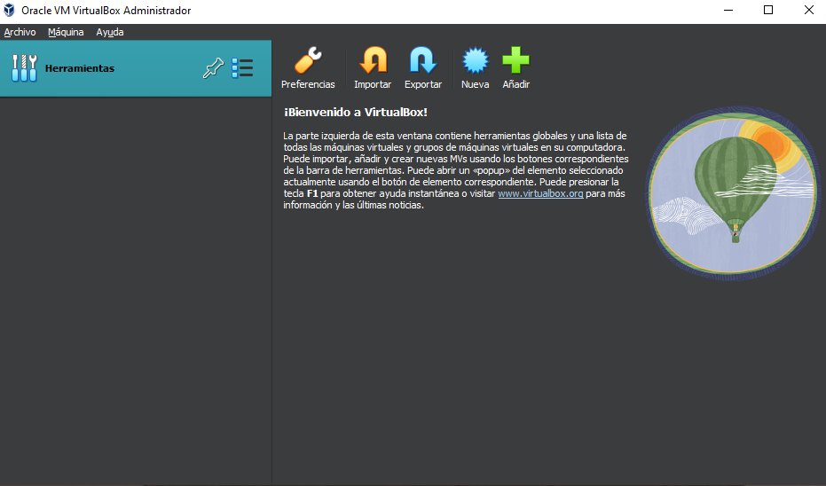Ahora dentro del programa le daremos a la pestaña "Máquina", "Nueva", y se elegirá los archivos que se han descargado con anterioridad.

Ahora indicamos el nombre que queremos ponerle a la maquina que vamos a crear, y en el apartado "Imagen ISO" le daremos click hasta la ruta donde se encuntra el archivo.
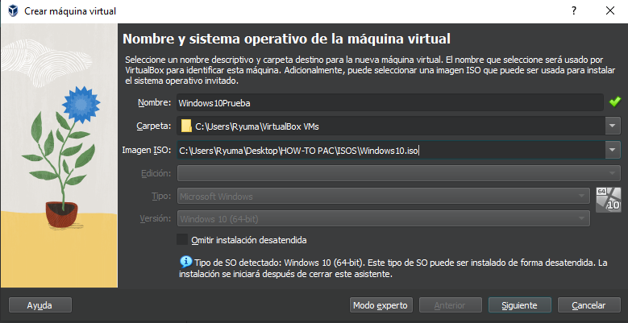Le damos a siguiente, y crearemos un usuario dentro del sistema operativo, tambien podemos dejarlo en defaul donde el ususario se llamara "vboxuser" y su contraseña sera "changeme", ademas podemos añadir la clave del producto en caso que se requiera.
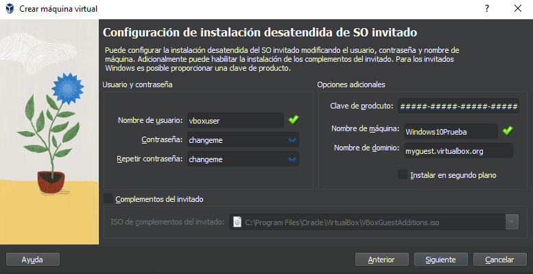El siguiente paso sera darle recursos de nuestro ordenador a la maquina virtual, como Memoria Ram, Procesador y Disco Duro.
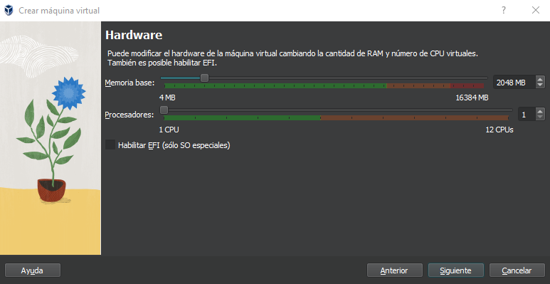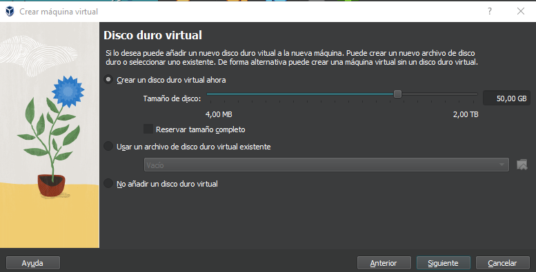
Antes de finalizar la creación de la maquina, nos dará un pequeño resumen te todas las elecciones que se han escogido.
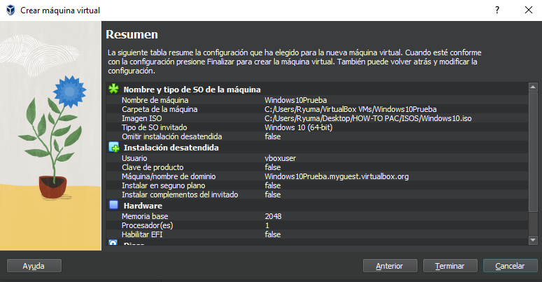Al finalizar se abrirá un enlace la maquina que hemos creado, tambiem podemos ejecutarlo al instante así podemos ir adelantando en el proximo paso.
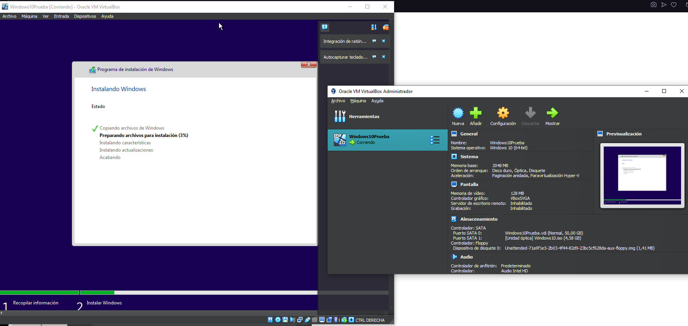Una vez creada la primera maquina virtual, repetiremos el mismo proceso, solamente cambiando la "Imagen ISO" por el archivo que falta
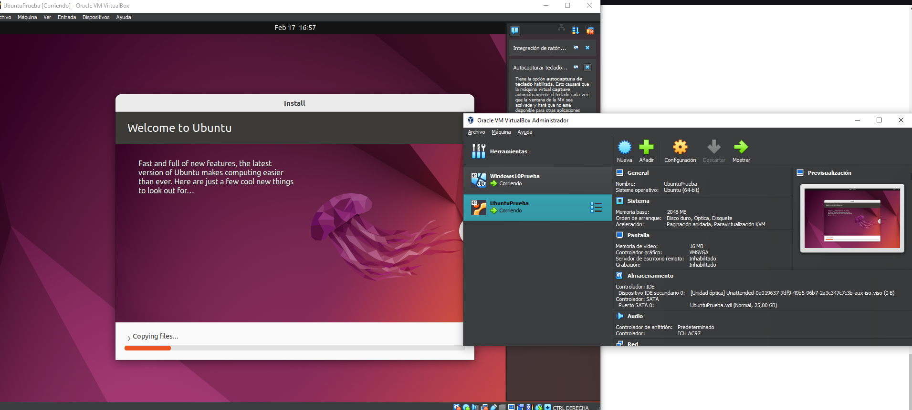